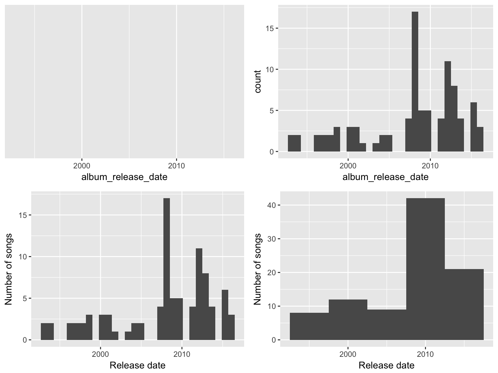
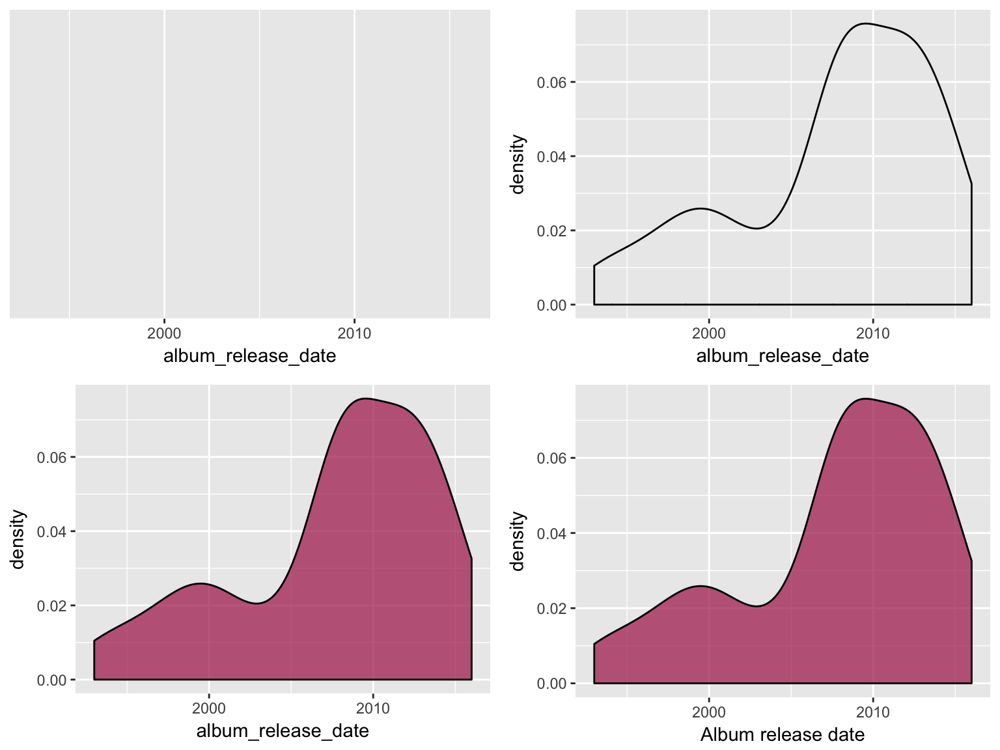

5.1 Pre-Bootcamp Homework: Intro to R, RStudio, and R Markdown
5.1.1 Objectives
Welcome to statistic and data science portion of the Math-to-Industry Bootcamp! In this bootcamp, you will build your statistical, data, and computing literacy. Doing statistics and data science requires statistical software. Preparing for this aspect of the bootcamp is the focus of your pre-bootcamp homework. Specifically, the objectives of this assignment are to
- Download and install R and RStudio on your machine.
- Become familiar with the RStudio environment and learn how to perform basic calculations in the console.
- Begin working with data in RStudio, including importing data, examining the structure of data, visualizing single variables, and numerically computing summary statistics.
- Become familiar with using R Markdown to organize, communicate, and save your work in a reproducible format.
You should allocate 2-3 hours for this assignment prior to the bootcamp. If you are stuck or have questions, feel free to email David Shuman (dshuman1@macalester.edu). David will also be available to answer any questions at the IMA from 2:30-3:30 on Wednesday, June 26th, the day before this section of the bootcamp begins.
5.1.2 Introduction to RStudio
As you might guess from the name, “Data Science” requires data. Working with modern (large, messy) data sets requires statistical software. We’ll exclusively use RStudio. Why?
- it’s free
- it’s open source
- it has a huge online community
- it’s the industry standard
- it can be used to create reproducible and lovely documents (In fact, this tutorial that you’re currently reading was constructed entirely within RStudio!)
5.1.2.1 Download R & RStudio
To get started, take the following two steps in the given order. Further, if you already have R/RStudio, make sure to update to the most recent versions.
- Download & install R: https://mirror.las.iastate.edu/CRAN/
Download & install RStudio: https://www.rstudio.com/products/rstudio/download/
Be sure to download the free version!!
What’s the difference between R and RStudio? Mainly, RStudio requires R – thus it does everything R does and more. We will be using RStudio exclusively.
5.1.2.2 RStudio Basics
Once you open RStudio, you’ll see four panes, each serving a different function:

The short video below provides a quick tour of RStudio and summarizes some basic features of the console (the main points of which are summarized below).
Video summary:
In the RStudio console we can
perform simple calculations
2 + 3 ## [1] 5utilize built-in RStudio functions to which we supply the necessary arguments:
function(arguments)sqrt(9) ## [1] 3 sum(2, 3) ## [1] 5 sum(3, 2) ## [1] 5 rep(2, 3) ## [1] 2 2 2 rep(3, 2) ## [1] 3 3install new (open source) RStudio packages that contain specialized functions written by other RStudio users. For example:
install.packages("tidyverse", dependencies = TRUE)
Debugging & Anti-Frustration Tips
Making mistakes is inevitable and necessary when learning a new language. The following will save you some time and frustration:
- Spelling and capitalization matter.
thisandThiSare different.- With the cursor at the
>in the console, use the up arrow to access previous lines without re-typing. You can also find previous lines in theHistorytab in the upper-right panel of RStudio.- Type
?repto get help and examples for therepfunction (for example).- Find help online! There’s a massive RStudio community at http://stackoverflow.com/ If you have a question, somebody’s probably already written about it. Or just google.
Exercise 5.1 (Warm Up) Use RStudio as a simple calculator to do the following:
a. Perform a simple calculation: calculate 90/3.
b. RStudio has built-in functions to which we supply the necessary arguments: function(arguments). Use the built-in function sqrt to calculate the square root of 25.
c. Use the built-in function rep to repeat the number “5” eight times.
d. Use the seq function to create the vector (0, 3, 6, 9, 12). (The video doesnt cover this!)
e. Create a new vector by concatenating three repetitions of the vector from the previous part.
Exercise 5.2 (Assignment) We often want to store our output for later use (why?). The basic idea in RStudio:
`name <- output`Try the following syntax line by line. NOTE: RStudio ignores any content after the #. Thus we use this to ‘comment’ and organize our code.
#type square_3
square_3
#calculate 3 squared
3^2
#store this as "square_3"
square_3 <- 3^2
#type square_3 again!
square_3
#do some math with square_3
square_3 + 25.1.3 Working with Data in RStudio
5.1.3.1 Getting Started
RStudio provides a powerful tool for working with data. The following video illustrates some of the basics. It features data related to the fivethirtyeight.com article Hip-Hop is Turning on Donald Trump that we can access through the fivethirtyeight RStudio package. A summary of the video is provided below.
Video summary:
Import and name data
How we import data into RStudio depends on its format (eg: Excel spreadsheet, csv file, txt file) and storage locations (eg: online, within Wiki, desktop). In this example, we work with thehiphop_cand_lyricsdata that are stored in thefivethirtyeightRStudio package. We store this under a shorter name (HipHop) using the assignment operator<-. NOTE: RStudio ignores any content after the#. Thus we use this to ‘comment’ and organize our code.# load the fivethirtyeight package library(fivethirtyeight) # store hiphop_cand_lyrics under a shorter name HipHop <- hiphop_cand_lyrics
Tidy data
Tidy data tables have three key features:
- Each row represents a unit of observation.
- Each column represents a variable (ie. an attribute of the cases that can vary from case to case). Each variable is one of two types:
- quantitative = numerical
- categorical = discrete possibilities/categories
- quantitative = numerical
- Each entry contains a single data value; no analysis, summaries, footnotes, comments, etc., and only one value per cell
In the video example, cases are individual mentions of a presidential candidate in a song, and variables include the song name, artist, candidate, sentiment, etc.
Examining data structure
We can examine the basic structure of our data using the following functions:head(HipHop) # the first 6 rows ## # A tibble: 6 x 8 ## candidate song artist sentiment theme album_release_d… line url ## <chr> <chr> <chr> <ord> <chr> <int> <chr> <chr> ## 1 Mike Huck… None… Aesop… neutral <NA> 2011 Withe… http:… ## 2 Mike Huck… Well… Soul … negative <NA> 2012 Might… http:… ## 3 Jeb Bush Awe Dez &… neutral <NA> 2006 I hea… http:… ## 4 Jeb Bush The … Diabo… negative poli… 2006 What … http:… ## 5 Jeb Bush Mone… Goril… negative pers… 2007 I'm c… http:… ## 6 Jeb Bush Hidd… K-Rino negative poli… 2012 The R… http:… dim(HipHop) # dimensions = number of cases & variables ## [1] 377 8 names(HipHop) # variable labels/names ## [1] "candidate" "song" "artist" ## [4] "sentiment" "theme" "album_release_date" ## [7] "line" "url"
Examining a single variable
To access and focus on a single variable, we can use the$notation:HipHop$candidate HipHop$album_release_dateIt’s important to understand the format/class of each variable (quantitative, categorical, date, etc) in both its meaning and its structure within RStudio:
class(HipHop$candidate) ## [1] "character" class(HipHop$album_release_date) ## [1] "integer"If a variable is categorical (either in
characterorfactorformat), we can determine itslevels/ category labels:levels(HipHop$candidate) ## NULL levels(factor(HipHop$candidate)) ## [1] "Ben Carson" "Bernie Sanders" "Chris Christie" ## [4] "Donald Trump" "Hillary Clinton" "Jeb Bush" ## [7] "Mike Huckabee" "Ted Cruz"
5.1.3.2 Univariate Graphical Summaries
Once we understand its structure, we can examine and tell a story with our data! Data visualization is the first natural step. Why?
- Visualizations help us understand what we’re working with: What are the scales of our variables? Are there any outliers, i.e. unusual cases? What are the patterns among our variables?
- This understanding will inform our next steps: What statistical tool / model is appropriate?
- Once our analysis is complete, visualizations are a powerful way to communicate our findings and tell a story.
We’ll start with univariate visualizations using the ggplot() function. Though the learning curve is steep, its “grammar” is intuitive and generalizable once mastered. ggplot() is stored in the ggplot2 package. You only have to type this once every time you open RStudio (and once in your markdown document):
library(ggplot2)IMPORTANT: The best way to learn about ggplot() is to just play around - don’t worry about memorizing the syntax. Rather, focus on the patterns and potential of their application.
5.1.3.2.1 Categorical Variables
The appropriate visualization depends on whether the variable is categorical or quantitative. Consider the categorical candidate variable which contains the candidate mentioned in each song in the sample. A table provides a simple summary of the number of mentions of each candidate:
table(HipHop$candidate)
##
## Ben Carson Bernie Sanders Chris Christie Donald Trump
## 1 2 2 268
## Hillary Clinton Jeb Bush Mike Huckabee Ted Cruz
## 92 9 2 1A bar chart provides a visualization of this table. In examining the bar chart, keep your eyes on variability (how are cases spread among the categories?) and take-home message. Try the code below that builds up from a simple to a customized bar chart. At each step determine how each piece of code contributes to the plot. Upon examining these plots, notice that Donald Trump is mentioned much more frequently than the other candidates. Hillary Clinton has far fewer mentions than Trump but far more than any other candidate.
library(ggplot2)
# set up a plotting frame
ggplot(HipHop, aes(x = candidate))
# add a layer with the bars
ggplot(HipHop, aes(x = candidate)) +
geom_bar()
# add axis labels
ggplot(HipHop, aes(x = candidate)) +
geom_bar() +
labs(x = "Mentioned candidate", y = "Number of songs")
# rotate the text
ggplot(HipHop, aes(x = candidate)) +
geom_bar() +
labs(x = "Mentioned candidate", y = "Number of songs") +
theme(axis.text.x = element_text(angle = 45, hjust = 1))
5.1.3.2.2 Quantitative Variables
Let’s focus on just “Hillary Clinton” mentions in hip hop (don’t worry about the code for doing this yet):
justHC <- HipHop %>%
filter(candidate == "Hillary Clinton")The quantitative album_release_date variable contains the release date of each song that mentions Clinton. Quantitative variables require different summary tools than categorical variables. For example, a table of the quantitative album_release_date numbers isn’t very illuminating:
table(justHC$album_release_date)
##
## 1993 1994 1996 1997 1998 1999 2000 2001 2002 2003 2004 2005 2007 2008
## 2 2 2 2 2 3 3 3 1 1 2 2 4 17
## 2009 2010 2011 2012 2013 2014 2015 2016
## 5 5 4 11 8 4 6 3Here we’ll focus on 2 of many methods for visualizing the distribution of a quantitative variable: histograms and density plots. In examining these viz, keep your eyes on the following:
- center (what’s a typical value?)
- variability (how spread out are the values?)
- shape (how are values distributed?)
- outliers
- take-home message
5.1.3.2.2.1 Histograms
Histograms are constructed by (1) dividing up the observed range of the variable into ‘bins’ of equal width; and (2) counting up the number of cases that fall into each bin. Try out the code below that builds up from a simple to a customized histogram. At each step determine how each piece of code contributes to the plot. Upon examination, note the take-home message of the histograms: Clinton has been part of the hip hop landscape since the early 1990s, though her “popularity” peaked around 2008 and has decreased since.
library(ggplot2)
# set up a plotting frame
ggplot(justHC, aes(x = album_release_date))
# add a histogram
ggplot(justHC, aes(x = album_release_date)) +
geom_histogram()
# add axis labels
ggplot(justHC, aes(x = album_release_date)) +
geom_histogram() +
labs(x = "Release date", y = "Number of songs")
# make the bins wider
ggplot(justHC, aes(x = album_release_date)) +
geom_histogram(binwidth=5) +
labs(x = "Release date", y = "Number of songs")
5.1.3.3 Density Plots
Density plots are essentially smooth versions of the histogram. Instead of sorting cases into discrete bins, the “density” of cases is calculated across the entire range of values. The greater the number of cases, the greater the density! The density is then scaled so that the area under the density curve always equals 1 and the area under any fraction of the curve represents the fraction of cases that lie in that range. If you’ve taken Probability, you can think of the sample density curve as an estimate of the population probability density function. Try the following code.
library(ggplot2)
# set up the plotting frame
ggplot(justHC, aes(x = album_release_date))
# add a density curve
ggplot(justHC, aes(x = album_release_date)) +
geom_density()
# add color and transparency
ggplot(justHC, aes(x = album_release_date)) +
geom_density(fill="maroon",alpha=.75)
# add axis labels
ggplot(justHC, aes(x = album_release_date)) +
geom_density(fill="maroon",alpha=.75) +
labs(x = "Album release date")
After completing the above exercises, you should recognize some ggplot() patterns!
ggplot() patterns
ggplot(), short for “grammar of graphics” plot, is a powerful function. We’ll focus on the patterns of this function over the memorization of its syntax. For example, all of ourggplot()code had the following patterns:
- Line 1 of the code specified the name of our data and the variable of interest within that data:
ggplot(MY DATA, aes(x = VARIABLE ON X AXIS))whereaesis short foraesthetics.
- Except for the last line of the plot code, lines end with
+. This tells RStudio that we’re not done with the plot code yet.
- The second row of the code indicates what kind of plot we want to make. Thus far, we’ve seen
geom_bar(),geom_histogram(),geom_density().
- We can change the x-axis and y-axis labels using
labs(x = "MY X LABEL", y = "MY Y LABEL")
5.1.3.3.0.1 Numerical Summaries
We can also use RStudio to compute summary statistics, such as the mean, median, and standard deviation of a variable. Here is an example for the density plot above:
mean(justHC$album_release_date)
## [1] 2008
median(justHC$album_release_date)
## [1] 2008
sd(justHC$album_release_date)
## [1] 6.049Recall that the mean and median are two measures of the trend or typical value of a variable:
- mean
The arithmetic average. Example: the mean of \((x_1,...,x_5) = (1, 6, 3, 20, 6)\) is \[\overline{x} = \frac{\sum_{i=1}^5 x_i}{5} = 7.2\] - median
The 50th percentile. Example: the median of \((x_1,...,x_5) = (1, 6, 3, 20, 6)\) is 6 since this is the middle number when we sort the sample: \((1, 3, 6, 6, 20)\).
Beyond the simple range of scores, variance and standard deviation are common measures of variability. Suppose we have \(n\) sample values \((x_1,...,x_n)\) with a sample mean of \(\overline{x}\).
Sample variance is loosely interpreted as the typical squared deviations of individual cases from the mean: \[var(x) = \frac{\sum_{i=1}(x_i - \overline{x})^2}{n-1}\]
Note that the variance has (original units)2Sample standard deviation is loosely interpreted as the typical deviation of individual cases from the mean: \[sd(x) = \sqrt{var(x)}\] Note that the standard deviation has units on the original scale, and is therefore easier to interpret than the variance!
5.1.4 R Markdown and Reproducible Research
By this point, you’ve tried out some syntax in the RStudio console. There are pros and cons to the console:
- The console is good for testing out RStudio code and other temporary work.
- The console is bad for organizing, communicating, and saving your work.
In the video below, you’ll learn about R Markdown which is great for organizing, communicating, and saving your work! In fact, this entire tutorial that you’re reading now was constructed using R Markdown! The basic idea is that you can use R Markdown to create an html / pdf file that includes your text, LaTeX equations, R code (what you type into RStudio), and R output (the corresponding results). In doing so…
- there’s no need to copy and paste between RStudio and Word
- you have documentation of how you arrived at your conclusions
- revisions are easy; you can change your code and update your entire document at the click of a button!
- your work is reproducible by others!
Reproducible research is the idea that data analyses, and more generally, scientific claims, are published with their data and software code so that others may verify the findings and build upon them. - Reproducible Research, Coursera
To use R Markdown, you will write an R Markdown formatted file in RStudio and then ask RStudio to knit it into an HTML document (or occasionally a PDF or MS Word document).
The following video on R Markdown was compiled for a different course, but the majority of its content translates here!
Other useful R Markdown resources:
Exercise 5.3 (Deduce the R Markdown Format) Look at this Sample RMarkdown in RStudio, and the HTML webpage it creates.
- How are bullets, italics, and section headers represented in the R Markdown file?
- How does R code appear in the R Markdown file?
- In the HTML webpage, do you see the R code, the output of the R code, or both?
5.1.5 Practice
Work through each exercise below.
Exercise 5.4 (Install packages) We’ll use several packages throughout the bootcamp. So that we can maximize our time together in class, it’s important that you install these packages before we meet. To this end, copy and paste the following into your RStudio CONSOLE (not an RMarkdown doc). It will take a while to run - better now than later!
```
install.packages("dplyr", dependencies = TRUE)
install.packages("ggplot2", dependencies = TRUE)
install.packages("fivethirtyeight", dependencies = TRUE)
install.packages("devtools", dependencies = TRUE)
install.packages("readr", dependencies = TRUE)
install.packages("mosaic", dependencies = TRUE)
install.packages("rvest", dependencies = TRUE)
install.packages("tidyr", dependencies = TRUE)
install.packages("DAAG", dependencies = TRUE)
install.packages("infer", dependencies = TRUE)
install.packages("boot", dependencies = TRUE)
install.packages("gapminder", dependencies = TRUE)
install.packages("lubridate", dependencies = TRUE)
install.packages("ggmap", dependencies = TRUE)
# Try but don't worry if the following don't work
# We'll only use these a couple of times
install.packages("choroplethr", dependencies = TRUE)
install.packages("choroplethrMaps", dependencies = TRUE)
```Exercise 5.5 (Start a new R Markdown document) Open a new R Markdown document in which you’ll record your work (both code & text). Give this document an appropriate title and author name (you!). Knit your document to an html to make sure that process works before you try anything else.
Exercise 5.6 (Require packages within your R Markdown file) Even though you have installed packages on your computer, you need to tell RStudio which packages you want to actively use in each R Markdown file. In the code chunk that starts with r setup at the top of this document, add the following three lines to load the packages that you’ll need to complete the exercises:
```
library(ggplot2)
library(tidyverse)
library(dplyr)
``` You can also delete everything below that first code chunk. Knit again. Hot tip: Knit often. This will make it easier to debug your code / identify errors.
Exercise 5.7 (Load and explore data) The “World Prison Brief” conducted by the International Centre for Prison Studies provides insight into how incarceration rates vary from country to country. Statistics from the 2010 brief (courtesy chartsbin.com) are stored at http://www.macalester.edu/~ajohns24/data/WorldIncarceration.csv where incarceration rates are reported as the number of present incarcerations per 100,000 persons. You will need to use this data for the remaining exercises. Since it’s stored as a csv file on the internet, you can import the data into RStudio and store it under the name Prison with the following:
Prison <- read_csv("https://www.macalester.edu/~ajohns24/data/WorldIncarceration.csv")- What are the cases in this data set?
- Use RStudio functions to:
- summarize the number of cases in
Prison
- examine the first 6 cases of
Prison
- list out the names of all variables in
Prison
- summarize the number of cases in
Exercise 5.8 (Explore a categorical variable)
a. Construct a table of the number of cases that fall into each continent.
b. Construct a single visualization of the table above. For practice, change the axis labels.
Exercise 5.9 (Explore a quantitative variable)
a. Construct a histogram of all incarceration rates.
i. change the bin width to 0.5 per 100,000
ii. change the bin width to 500 per 100,000
b. Comment on the “goldilocks” problem of choosing a bin width that’s neither too small nor too big.
c. Construct a density plot of incarceration rates.
d. Examine the histogram and density plot. Which visualization do you prefer? Why? What are the pros and cons of each?
Exercise 5.10 (Summary statistics) These plots allow us to eyeball age trends and variability. Let’s numerically summarize some of these features.
a. Calculate the mean and median incarceration rate across all countries. What are the units?
b. Calculate the variance and standard deviation of incarceration rates among all countries. What are the units?
c. Use quantile() to calculate the exact range of the middle 95% of ages.
Exercise 5.11 (Modifications) No class will teach you everything you need to know. Thus, being able to find help online is an important skill. To this end, learn how to make the following modifications to your histogram from above.
a. Add a title.
b. To better distinguish between the bars, use color to outline each bar in "white".
c. Change the fill color of the bars from black (the default) to "red".
d. Add two vertical lines, one representing the mean and the other representing the median incarceration rate. Use two different colors.
e. Change the limits of the x-axis to range from 0-1000.
Exercise 5.12 (Knit document) Knit your R Markdown document. It should yield an html file with all of your completed work.
Exercise 5.13 (Complete survey) I’d like to learn a bit more about you before the start of our time together. Please complete this short survey by June 26th.